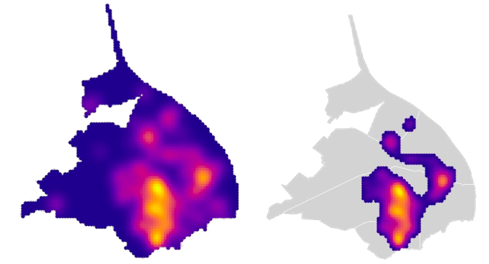
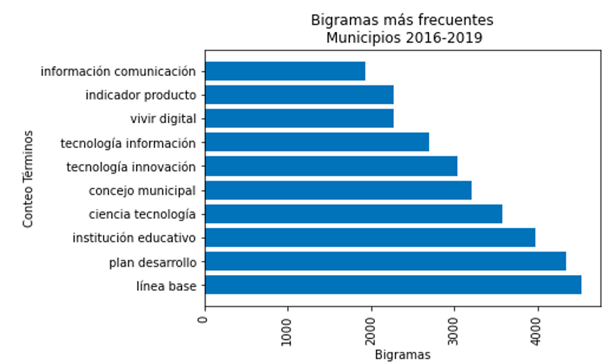
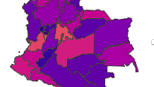
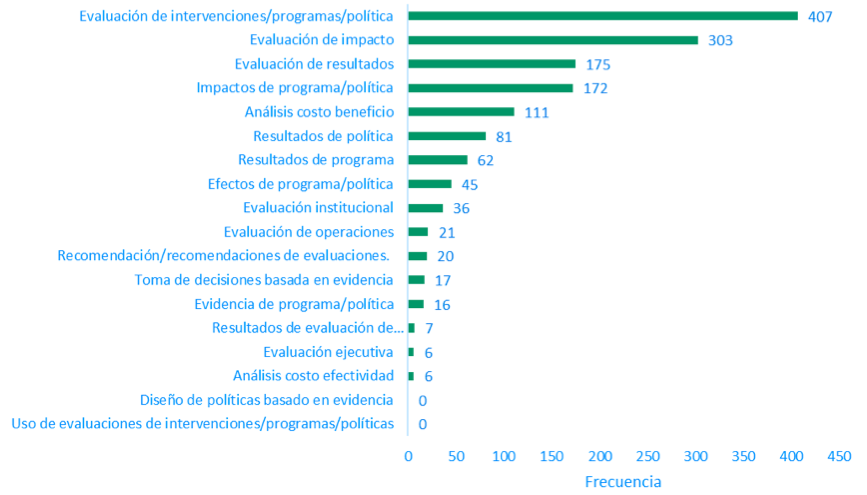

Crime prediction model for Barranquilla
In this project, I conducted a descriptive analysis of crimes according to their typology for the period 2014-2022. Additionally, I developed a predictive model for crimes at various geographic levels and across different time ranges to evaluate its performance under these varying conditions. Finally, I created a tool to visualize historical crime data and the probability of crime occurrence at the neighborhood-day level based on the developed model, categorized by crime typology.

Analyzing Digital Transformation in Colombian Regional Development Plans: A Natural Language Processing Study
In this project, to use Natural Language Processing (NLP) to identify and count terms related to different dimensions (access, trust, employment, innovation, markets, society, cross-cutting, and use) of digital transformation in Colombia's regional development plans for the periods 2016-2019 and 2020-2023 at both the departmental (32 documents) and municipal (1104 documents) levels, and to measure their evolution between these two periods. Additionally, to find similarities between the regional documents and national policy documents related to digital transformation, as well as to identify other words accompanying the terms considered a priori related to this topic.

XGBoost Models for Predicting Legal Needs Indicators for All Colombian Municipalities Based on a 13-Municipality Survey
The objective of this project is to generate a predictive model for variables related to the security conditions of citizens in all municipalities of Colombia (1101), based on the results of the Legal Needs module of the Citizen Coexistence and Security Survey collected by the National Department of Statistics of Colombia (DANE) in 13 municipalities of the country. These variables are used to calculate indicators that account for the legal needs of the country.

Utilizing Natural Language Processing (NLP) for Analyzing Tweets and Public Policy Documents to Quantify the Importance of Public Policy Evaluations in Colombia
In this project, natural language processing (NLP) is used to identify and count terms related to the evaluation of public policies in CONPES (National Council for Economic and Social Policy) documents from Colombia for the period 2002-2021, as well as in the National Development Plans (PND) of Colombia for the period 2002-2022. The objective is to quantify the importance of public policy evaluations at the national level. Additionally, web scraping was performed using the Tweepy library to download tweets from previously selected government and academic accounts in order to evaluate the use of the same terms.